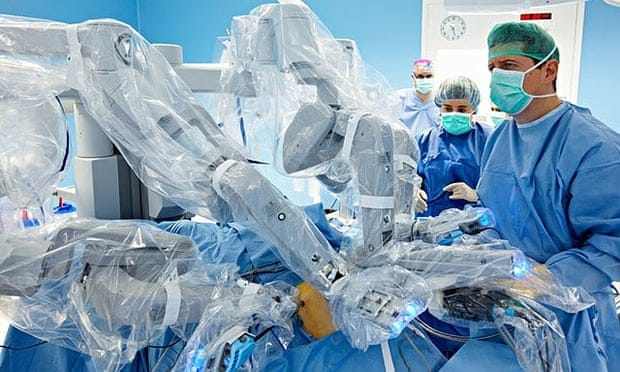

Novel robotic training program reduces physician errors placing central lines
They published their results in the Journal of Surgical Education. The researchers hold patents on the technology used in this work. In addition to working to improve the central line placement training, the team is also applying the framework to other common procedures with high complication rates, such as colonoscopies and laparoscopic surgeries.
"Our approach is focused on reducing preventable errors -- this paper is the first significant clinical evidence that we are moving the needle on the gap in clinical education and clinical practice," said Scarlett Miller, professor of industrial engineering and of mechanical engineering at Penn State and principal investigator on the project. "If we ensure physicians going through residency training are proficient in a skill, like placing central lines, we can minimize the risk on human life."
Traditional training for placing a central line and other routine surgical procedures starts with a resident watching a more senior doctor complete the process. Then, the resident is expected to do the procedure themselves, and, finally, they teach someone else to do the procedure.
Back to Research & Training